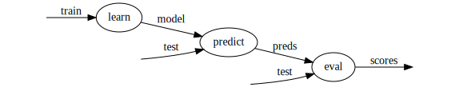
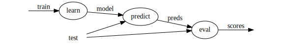

ducttape: A Crash Course « 0. Installation
A workflow consists of several related steps, or tasks, which are organized in a .tape file. This section demonstrates how to create the tasks in a pipeline-structured workflow, indicating inputs and outputs as well as dependencies among tasks in a sequence.
For concreteness, we will have a running example of a simple machine learning workflow with 3 tasks (organized as a pipeline, with each feeding the next):
learn: train a classifier on some input data, producing a modelpredict: with the learned classifier model, make predictions given some new observationseval: measure the predictive power/accuracy of the classifier by comparing the predictions with true (gold) labelsWe assume that executables for these three steps are available in the same directory as the .tape file; the job of the workflow is to invoke those executables with the correct arguments/resources.
In our example, the classifier will use labeled examples stored in a file called train for learning, and examples stored in test for evaluation.
The tasks, inputs, and outputs in the workflow can be visualized as follows:

To start our workflow, we fire up a text editor and create a file called classifier.tape with the following:
task learn < in=train > model { ../../learner $in > $model }
This defines the learn task. Every task consists of a header—a line starting with task—and a body containing bash commands.
Let us examine the header. It starts with the keyword task and the name of the task. Then comes the operator <, which introduces input files/directories. Input paths are relative to the directory containing the .tape file. This task has one input, the train file; this is assigned to the variable in, so the body of the task can refer to $in rather than the filename directly. One benefit of specifying inputs in the header is that ducttape will automatically ensure they are present before proceeding to the body of the task, and fail with an informative error message if any inputs are missing.
After the inputs are the operator > and the outputs. This task defines a single output known by the variable model. (Because there is no = after the variable name, ducttape will use the variable name as the filename as well.) Declaring this output will cause ducttape to verify that it has been created when the task completes. This is especially useful for later tasks in the workflow that expect the model as an input.
The task body is simply a bash command invoking an executable. By default, the body will be run from a sub-sub-directory of the execution directory, so we refer to the executable with the appropriate relative path. (An absolute path would work also.) The argument to the executable is the value of input variable $in (which will contain the file path train); the executable's output is redirected to the location stored in the output variable $model, which in this case will simply be a file called model.
Now we add two more tasks:
task predict < in=test model=$model@learn > preds { ../../predictor $model < $in > $preds } task eval < gold=test preds=@predict > scores { cut -f2 $gold > temp paste temp $preds > gold_and_pred rm temp ../../evaluator gold_and_pred > $scores }
The predict task follows the same general pattern as learn did. This time there are two inputs, the second of which is the output of learn! The expression model=$model@learn defines the local (input) variable model and assigns to it the value of the model variable from the learn task. This implicates the entire learn task as a dependency of predict; ducttape will never start executing predict until learn has completed successfully.
In general, a task may depend on multiple outputs of multiple other tasks, which would result in a dependency graph more complex than a simple pipeline. The only requirement is that the graph be acyclic.
The final task, eval, is defined in a similar manner. It depends on the output of predict; the header uses preds=@predict as shorthand for preds=$preds@predict (because the two variable names are identical). Here we see that the task body may contain arbitrary bash commands, including commands that create and delete temporary files.
Congratulations—you've completed your first workflow! The result can be seen here.
Once the tasks are defined, it's time to debug and execute the workflow. This is done on the command line with the ducttape executable. Simply provide the path to your .tape file:
bash
$ ducttape <tape-file>
To illustrate some of ducttape's prophylactic capabilities, here is what happens if you give it a buggy workflow file:
We correct the typo modl to model and repeat, whereupon ducttape finds another bug:
Here the bug is that preds=@learn should have been preds=@predict. If we fix that, it detects one more bug—a mistyped filename:
All input paths that do not refer to an output of a previous task are checked prior to executing the workflow. Once trainn is corrected to train, it will be able to find the file.
Having worked through the bugs, here's how we execute the workflow, assuming that the input files train and test are present in the current working directory:
Here ducttape indicates which tasks it plans to run. A subdirectory of the current working directory is created for each task, and within each of those is a subdirectory called Baseline.baseline from which the task will be run (the reason for this extra subdirectory will become clear in the next section). Enter y at the prompt to continue.
The workflow is now complete! Output (along with some task metadata) will be found in the eval/Baseline.baseline directory.
Here is what would happen if we had included the learner executable but forgotten to include the predictor executable:
On the first bash command returning a nonzero exit status, the task fails, and with it any subsequent tasks in the workflow that depend on that task. The next time the workflow is invoked, ducttape recognizes that the learn task completed successfully but predict failed, and therefore picks up where it left off by restarting the predict task:
This deletes any partial output from the failed task, reruns it, and then continues onto the eval task to complete the workflow.
Some important things to keep in mind:
Ctrl-C or the end of the Unix session, any running tasks will be terminated and marked as unsuccessful. For long-running workflows, the Unix screen command can be used to start a session that will persist after the login session ends..tape file. Task input paths are defined relative to this directory.-O option when invoking ducttape. It defaults to the current working directory. All workflow information will be maintained under this directory, organized by task.-j flag: ducttape <tape-file> -j5 will result in up to 5 tasks running at once.
Notice that two tasks—predict and eval—contain the same hardcoded input file (test). This duplication is not ideal; better to use a variable in case the file path needs to be changed. Workflows may define global variables for this purpose: we simply add
global {
evaldata=test
}
and change the inputs of predict and eval to refer to $evaldata. The modified workflow can be depicted as follows:

Often it is desirable to associate metadata other than files and directories with a task. For example, suppose the evaluation step is parameterized by a numeric threshold value that will cause some of the predictions to be ignored. Rather than hard-coding it in the task body, we can set this threshold in the task header with an auxiliary variable called a parameter:
task eval < gold=$evaldata preds=@predict > scores :: T=0.5 { cut -f2 $gold > temp paste temp $preds > gold_and_pred rm temp ../../evaluator $T gold_and_pred > $scores }
The :: operator after the outputs introduces the parameters. Here we call the threshold T and assign it a value of 0.5. It can be used in the body as a bash variable just like the input and output variables.
The modified workflow is here.
You may ask: What if I want to try different values of T? The answer appears in the next section, which introduces ducttape's killer feature: HyperWorkflows.
A ducttape workflow organizes a set of tasks, atomic units of execution which may depend on each other, into an acyclic graph. A workflow's tasks are defined in a .tape file. The body of a task consists of arbitrary bash commands. The task header declares variables for inputs, outputs, and parameters to be used in the task body. Outputs of a task may be fed into subsequent tasks as inputs.
The command line tool statically checks and then executes a workflow, waiting until a task has completed successfully before starting tasks that depend on it. Failures due to invalid input paths or unsuccessful bash commands are caught early. If the workflow structure and runtime options allow, multiple tasks will be executed in parallel. Output files and metadata such as stdout/stderr logs are placed in a designated directory for each task.